|
This workshop is held jointly
with
the Canadian conference
on Computer & Robot Vision (CRV'06)
|
E |
Editorial
from Workshop Chairs
|
|
O |
Oral Papers*
Thusday, 8 June, 2006 (15:10-17:50) - as Special Session of CRV'06
(Full papers can be downloaded from ieeexplore.ieee.org
or by clicking on the paper title)
|
| 1 |
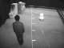
[Talk slides]
|
A Pixel-Weighting Method for Discriminating Objects of Different Sizes in an Image Captured from a Single Camera
Mookyung Park, Namsu Moon, Sang Rim Ryu, Jeong Pyo Kong, Y.J. Lee,
W.J. Mun (S1 Corporation, Korea)
Abstract - A novel method of pixel-weighting is
proposed to calculate the size of a detected object in an image
captured using a single camera. The calculated object size does
not vary significantly regardless of the location of the object in
an image, which allows it to be effectively utilized in a
vision-based surveillance sensing algorithm as a meaningful
feature for discriminating human intruders from other objects.
Experimental results show the feasibility of the proposed method.
|
| 2 |
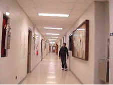
[Talk slides] [Video]
|
A Novel Clustering-Based Method for Adaptive Background Segmentation
S. Indupalli, M.A. Ali, B. Boufama (University of Windsor)
Abstract - This paper presents a new
histogram-based method for dynamic background modeling using a
sequence of images extracted from video. In particular, a k-means
clustering technique has been used to identify the foreground
objects. Because of its shadow resistance and discriminative
properties, we have used images in the HSV color space instead of
the traditional RGB color space. The experimental results on real
images are very encouraging as we were able to retrieve perfect
backgrounds in simple scenes. In very complex scenes, the
backgrounds we have obtained were very good. Furthermore, our
method is very fast and could be used in real-time applications
after optimization.
|
| 3 |
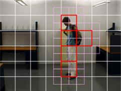 |
Object
detection and tracking using iterative division and correlograms
Rafik Bourezak and Guillaume-Alexandre Bilodeau (Ecole
Polytechnique de Montreal)
Abstract - This paper presents algorithms for
the detection and tracking of moving objects and their
relationships. The algorithms are based on color and texture
analysis for real time processing. Our goal is to study human
interaction by tracking people and objects for surveillance
applications. The object detection algorithm is based on color
histograms and iteratively divided interest regions for motion
detection. The tracking algorithm is based on correlograms which
combines spectral and spatial information to match detected
objects in consecutive frames.
|
| 4 |
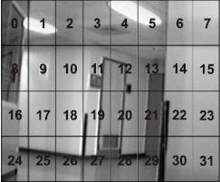 |
Collaborative Multi-Camera Surveillance with Automated Person Detection
Trevor Ahmedali and James J. Clark (McGill University)
Abstract - This paper presents the groundwork for a
distributed network of collaborating, intelligent
surveillance cameras, implemented on a set of low-cost
embedded microprocessor- based camera modules. Each camera trains
a person detection classifier using the Winnow algorithm for
unsupervised, online learning. Training examples are automatically
extracted and labelled, and the classifier is then used to locate
any person instances. To improve detection performance, multiple
cameras with overlapping fields of view collaborate to confirm
results. We present a novel, unsupervised calibration technique
that allows each camera module to efficiently understand its
spatial relationship with the other cameras. During runtime,
cameras apply the learned spatial correlations to confirm each
other’s detections. This technique implicitly handles
non-overlapping regions that cannot be confirmed. Its
computational efficiency makes it well-suited to real-time
processing on our hardware.
|
| 5 |
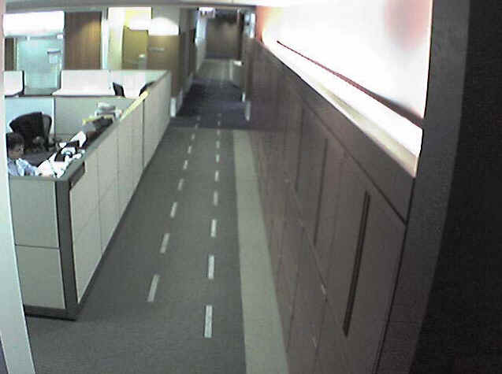
[Talk slides] [Video]
|
A Multiple-Sensor Indoor Surveillance System
Valery A. Petrushin, Omer Shakil, Damian Roqueiro, Gang Wei, Anatole V. Gershman (Accenture Technology)
Abstract - This paper describes an approach for people
localization and tracking in an office environment using a sensor
network that consists of video cameras, infrared tag readers, a
fingerprint reader and a PTZ camera. The approach is based on a
Bayesian framework that uses noisy, but redundant data from
multiple sensor streams and incorporates it with the contextual
and domain knowledge that is provided by both the physical
constraints imposed by the local environment where the sensors are
located and by the people that are involved in the surveillance
tasks. The experimental results are presented and discussed.
|
| 6 |
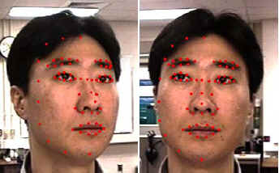
[Talk slides] [Video]
|
3D Face Reconstruction from Stereo Video
Unsang Park, Anil K. Jain (Michigan State University)
Abstract - Face processing in video is receiving
substantial attention due to its importance in many
security-related applications. A video provides rich information
about a face(multiple frames and temporal coherence) that can be
utilized in conjunction with 3D face models, if available, to
establish a subject’s identity. We propose a 3D face modeling
method based on constructing a user-specific model derived from a
generic 3D face model and stereo images (two video frames) of the
user. The user-specific 3D face model can be used both in
enrollment and recognition stages. The advantage of utilizing
reconstructed 3D face model is demonstrated by conducting face
recognition experiments for 9 probe subjects against a gallery
database containing 100 subjects.
|
| 7 |
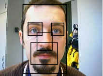 |
User Authentication based on Face Recognition with Support Vector Machines
Paolo Abeni, Madalina Baltatu, Rosalia D’Alessandro (TelecomItalia
Lab,
Italy)
Abstract - The present paper proposes an authentication
scheme which relies on face biometrics and one-class Support Vector
Machines. The proposed recognition procedures are based on both a global
approach and on a combination of a global and a component- based
approaches. Two different features extraction methods and three light
compensation algorithms are tested. The combined system outperforms the
global system and yields a significant performance enhancement with
respect to the prior results obtained with the one-class Support Vector
Machines approach for face recognition.
|
| P |
Poster/Demo
Papers**
Friday, 9 June, 2006 (15:30-17:30) - jointly with CRV'06 poster session
(Full papers can be downloaded directly by clicking on the
paper title)
|
| 1 |
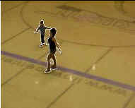
[Poster]
|
Region Competition for Object Tracking by Using Kullback-Leibler Distance and Level Set Contours
Mohand Saïd Allili and Djemel Ziou (Université de Sherbrooke)
Abstract - In this paper, we propose a
novel object tracking algorithm in video sequences. The formulation
of our tracking model is based on variational calculus, where region
and boundary information cooper-ate for object boundary localization
by using active contours. In the approach, only the segmentation of
the objects in the 1rst frame is required for initialization. The
evolution of the object contours on a current frame aims to 2nd the
boundary of the objects by minimizing the Kullback- Leibler distance
of the region features distribution in the vicinity of the contour
to the objects versus the background respectively. We show the
effectiveness of the approach on examples of object tracking
performed on real video sequences.
|
| 2
|
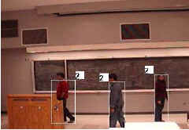
[Poster]
|
Tracking Multiple People for Video Surveillance
M. A. Ali, S. Indupalli and B. Boufama (University of Windsor)
Abstract - This paper addresses the problem of detecting and tracking multiple moving people in a complex
environment with unknown background. In this
paper, we propose a new correlation-based matching
technique for feature-based tracking. Our method was
compared with two existing matching techniques, namely the normalized Euclidean distance and histogram-based
matching. Experimental results on real-images
suggest that our correlation-based approach is more
accurate and efficient than the other two approaches.
|
| 3 |
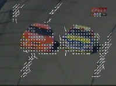
[Poster]
|
Detection of Moving Objects in Video Scene - MPEG like Motion Vector vs. Optical Flow
Kunio Takaya (University of Saskatchewan)
Abstract - This paper demonstrates the use
of motion vector as de�ned in MPEG video encoder to detect and
crudely segment moving objects in video scene. The proposed motion
vector search algorithm incorporated a mechanism to suppress search
in the still background and to invalidate the motion vectors found
at search boundaries. This paper presents four cases of video clips
processed to calculate and identify the MPEG like motion vectors
greater than a certain magnitude and to segment out corresponding
macro-blocks, which constitute a crude segmentation of moving
objects. The MPEG like motion vectors drawn for a consecutive image
pair were compared against the vector field calculated by the
optical ow method for subjective comparison.
|
| 4
|
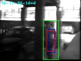
[Poster]
|
ACE Surveillance: the next generation surveillance for long-term monitoring and activity summarization
Dmitry O. Gorodnichy (NRC-IIT)
Abstract - This paper introduces a new concept for the area of
video surveillance called Critical Evidence Snapshot. We
show that automatic extraction and annotation of Critical Evidence Snapshots, which are defined as video
snapshots that provide a piece of information that is both useful and new, is the key to improving the utility
and efficiency of video surveillance systems. An
implementation of an ACE (Annotated Critical Evidence) Surveillance system made from off-the-shelf cameras
and a desktop is described. The results obtained on
several real-life surveillance assignments confirm our vision for ACE Surveillance as the next generation technology
for collecting and managing surveillance data.
|
|
5
|
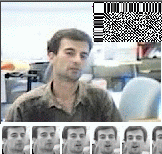
[Poster]
|
Associative tracking and recognition in video
Dmitry O. Gorodnichy (NRC-IIT)
Abstract - Due to limited resolution and quality of surveillance video, tracking and recognizing of objects in surveillance video
requires techniques for accumulation of information about the object over time.
The simplest of these techniques is histograms, which computes the distribution of pixel values over time and which is frequently used for tracking uniformly coloured objects such as faces.
Another well-known technique for the purpose is correlograms, which learns pixel values and their spatial relationship to
yield better discriminative power. However, this technique does not offer a complete learning-over-time solution either, because
it updates the information about the object, which is expressed in terms of cooccurance matrices,
using the currently observed pixels only and ignoring the preceding learning history.
Associative neural network based memorization can thus be seen as a next-level data accumulation technique suitable for learning
of objects in video over time, which takes into account both the learning history and
the spatial information about the object. This presentation describes how to use the Open
Source Associative Neural Network code for tracking and recognition
of objects in video. Two demos showing multiple-face tracking and
classification in low-resolution video are shown.
|
|
6
|
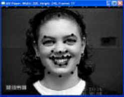
[Poster]
|
Sequence Based Face Characterization Using Factorized Feature Points.
Xiaozhou Wei and Lijun Yin (SUNY Binghamton).
Abstract - In this paper, we proposed a face tracking and
reconstruction scheme for face representation, human computer
interaction, and the application of security. We applied a
CDOF (Color Distribution Based Optical flow) approach to track the
feature points in a facial video sequence. The extracted feature
points sequence are then used as an input to derive their 3D
coordinates using a factorization based algorithm. In combining
with our model based expression generation approach, a facial
expression from a 2D input can be reconstructed as a 3D output.
The feasibility, limitation and future development of the proposed
scheme are discussed through the experimentation.
|
| 7
|
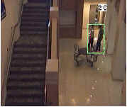
[Poster]
|
Video-Surveillance application with Self-Organizing
Maps
Mohamed Dahmane and Jean Meunier (Université de Montréal)
Abstract - In this demo, we present an
approach for video surveillance detection of abnormal events based
on target trajectory analysis. The methodology follows a typical
modular form: Detection/ Tracking/ Recognition. The detection step
is based on the color constancy principle and uses an adaptive
background subtraction technique with a shadow elimination model.
The target tracking involves a
direct and inverse matrix matching process. In the recognition stage
we consider local motion properties (flow vectors), and more global
ones expressed by elliptic Fourier descriptors. From these temporal
trajectory characterizations, two Kohonen maps allow to distinguish
normal behavior from abnormal or suspicious
ones. The classification results show a 94.6 % correct recognition
rate with video sequences taken by a low cost webcam. The system
runs at a 12Hz absolute minimum video
acquisition frequency, providing essentially real-time analysis.
|
| 8
|
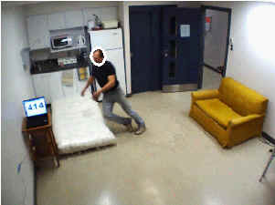
[Poster]
|
Fall Detection Using 3D Head Trajectory Extracted From a Single Camera Video
Sequence.
Caroline Rougier and Jean Meunier (Université de Montréal)
Abstract — In Western societies, the population grows old, and
we
must think about solutions to help them to stay at home in a secure
environment. By providing a specific analysis of people behavior,
computer vision offers a good solution for healthcare systems, and
particularly for fall detection. This demo will show the results of
a new method to detect falls using a monocular camera. The main
characteristic of this method is the use of head 3D trajectories for
fall detection.
|
|
9
|
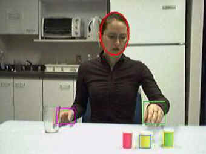
[Poster]
|
Detection of Medication Intake.
Myriam Valin and Jean Meunier (Biomedical Engineering Institute, Université de Montréal)
Abstract - In the context of the growing proportion of seniors in the western
world population and the efforts provided in home care services, a
computer vision system has been developed for monitoring medication
intake. The system can detect automatically medication intake using
a single webcam. Person detection and tracking over the video
sequence is done using color-based techniques while the recognition
of the medication intake activity is performed using a multi-level
scenario model. Experimental results in controlled conditions are
shown.
|
* Oral papers are published by IEEE Computer
Society Press as part of the the CRV'06
Proceedings. The BibTex reference of these papers is: @inproceedings{vp4s06-paper, title
= "... ", author = "...", year="2006", booktitle
= "First International Workshop on Video Processing for Security
(VP4S-06) in Proceedings of Third Canadian Conference on Computer and Robot
Vision (CRV'06), June 7-9, Quebec City, Canada",
pages = "" }
** Poster/Demo papers are published online at the workshop website. The BibTex
reference of these papers is: @inproceedings{vp4s06-paper,
title = "... ", author = "...",
year="2006", booktitle = "First International
Workshop on Video Processing for Security (VP4S-06), June 7-9, Quebec
City, Canada (online at www.computer-vision.com/4security)}
|

{kind=link}
{kind=link}
{kind=link}
{kind=link}
{kind=link}
{kind=link}